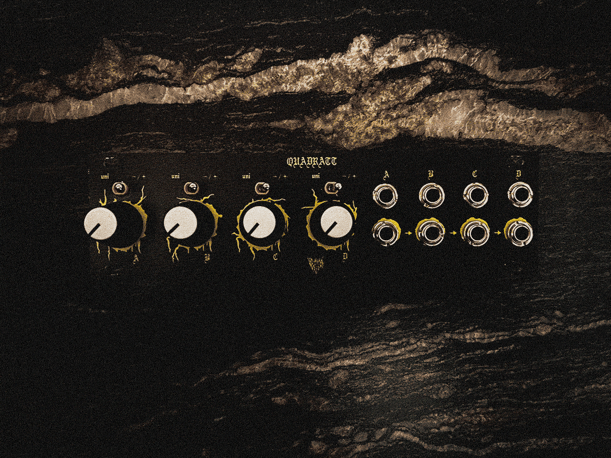
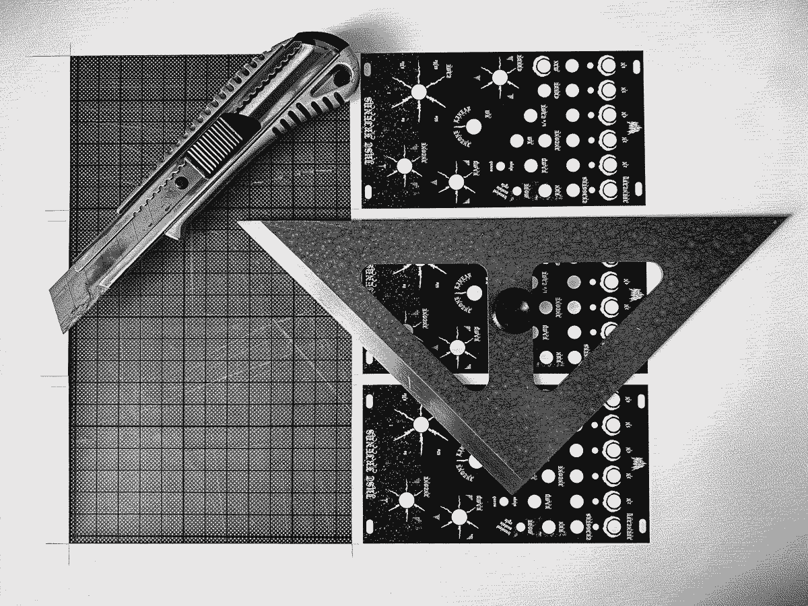
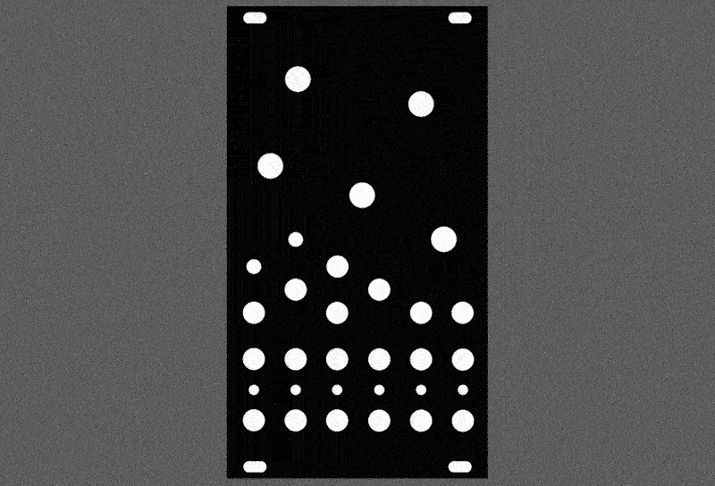
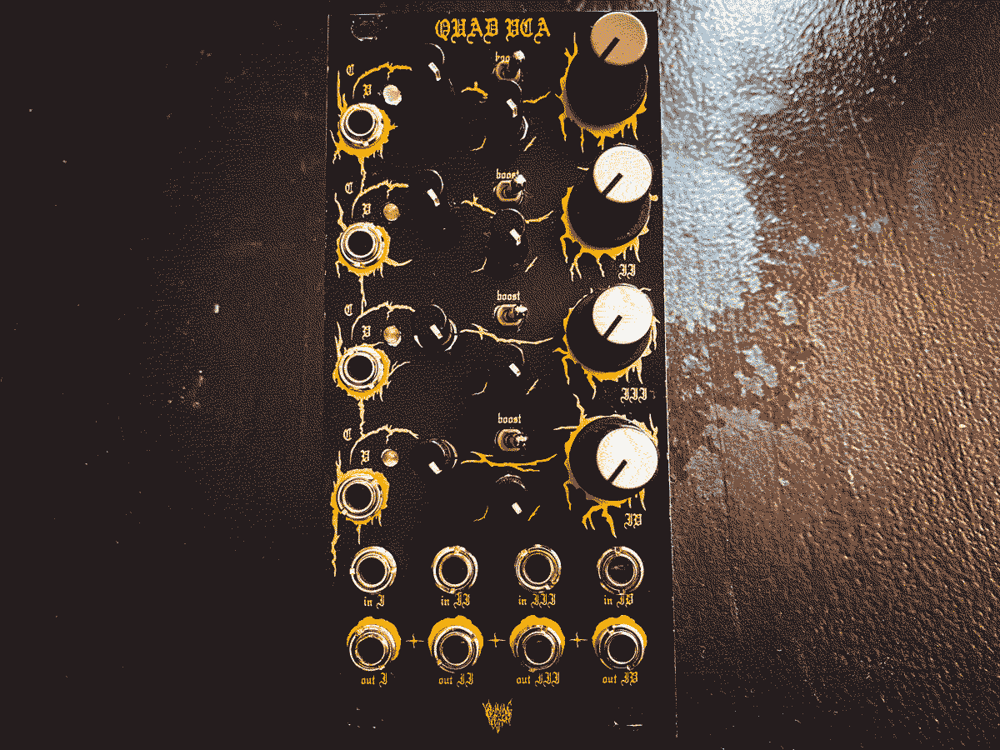
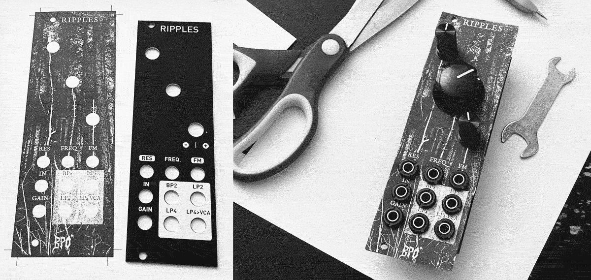

How to Make Paper Panel Overlays
14/08/2022. Tutorial by Yawning Youth
Note: tutorials are carried out at your own risk. Be careful with your precious self, modules & system.

Making black panels out of paper was something I started doing out of necessity. I was looking for a black panel for Intellijel's Quad VCA but couldn’t find one at the time, so I decided to make one by myself. The process of creating is something I really enjoy. Designing, printing and holding the finished product in my hands is always very fulfilling.
If you feel the same way and you want to work on a fun project than here’s a pretty inexpensive method for you to black out your modular synth. By any means, go and support the various manufacturers who make those incredible looking black panels.
Here is what you need:- Panel Template. If you already have a template, perfect! If you don’t have one yet, this github site offers a wide selection of different templates.
- Graphic Software Choose the software of your choice that can process SVG/AI files e.g. Adobe Illustrator, Adobe Photoshop or free alternatives like GIMP.
- Printer To print your panel overlay.
- Paper Choose any paper you like that works with your printer.
- Something to cut out the panels. Scissors, a knife or a scalpel or something similar to cut out the panels and holes. A hole-punch or compass can be handy for making holes too.
- Something to unscrew the nuts. Some manufacturers use specific nuts that need the appropriate nut driver. Use a fitting nut driver or some pliers. Be careful if you don't want to scratch the original panel, I speak from experience! If using pliers, wrap some tape around the ends to reduce the risk of scratches.
If you want to play it safe I recommend the ’Nut Tool Set’ by Exploding Shed. Especially if you want to rework multiple panels. - Black marker For fixing little accidents.

Method:
-
The following method can be applied to the templates from the link above. For the software, I use Adobe Illustrator.
- Import the SVG or AI file.
- Select all elements. Set the outlines to 1 pt and color the outlines black or don’t use any color at all. That’s up to you.
- Remove most of the outer lines from the template. Not sure if this is necessary. Experiment to find out what works best for you.
- Select all elements and try giving them a contrasting filling color that will stand out when you add a black background (Steps 5 & 6). If the color shows up - perfect. In my case the filling color never shows up. Maybe it’s because I use an older version of Illustrator. If you have the same problem you just need to put in a little bit more work and recreate all the elements and place them at the exact same spots.
- Add a black background layer below the template layer.
- Lock this layer so you don’t accidentally move it. If done correctly, everything should look something like this:
- Design your panel. I recommend adding multiple layers on top of the template layer for specific elements like text. It will be easier to navigate through your document later on. Whatever works best for you.
- Export your finished design as a PDF or format of your choice.
- Time to print your design! If you've worked from one of the templates above and not adjusted any of the overall sizing then it should print out at the perfect size.
- Cut out the Panel and the holes. Note: Be careful, watch your fingers, do this at own risk and don't blame BPO for any accidents! -Tommy
The round elements always look a little rough after cutting them out. Most of the time those are hidden under knobs and nuts. If that’s not the case for you just use the marker to touch up any white paper edges that are showing. - Unscrew all the nuts from the module, put your new overlay on top of the silver panel and screw the nuts back on. The hardware should be enough to keep the paper panel in place. Now you're done!

Now it’s time to get creative and finish your panel:

Alternative Method:
There also is an analog way if you are inexperienced with graphic software.- Remove the hardware as above.
- Measure out or trace around the panel onto some paper.
- Now you've made your own template, hand-draw your design before cutting it out.
Massive thanks to Yawning Youth for writing this up! Follow them on instagram to see more of their awesome panel overlays and check out their debut EP here. I gave this tutorial a try myself using Photoshop to make an overlay for Ripples and it worked perfectly!
Please be careful and do this at your own risk, don't cut your fingers off and maybe don't put a paper overlay on a hot power module and maybe don't risk this if you're one of those people that leaves their modular turned on permanently! Maybe this is fine, science isn't my strong point but stay safe and don't blame me if anything goes wrong.
If you successfully manage the above, then I suspect it's not too many more steps to actually get PCB panels produced but if I ever get round to figuring that out, i'll let you know! If anyone reading this knows about that part of the process and is up for doing a tutorial, please get in touch.
If you don't know your way around design software, check out the tutorial on painting panels.
-Tommy
